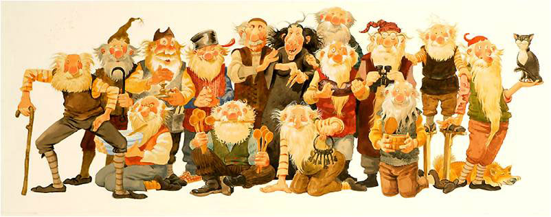

Über gleich 13 Weihnachtsmänner dürfen sich die Kinder in Island freuen.
Genauer gesagt handelt es sich dabei um Trolle, die zwischen dem 12. Dezember und 24. Dezember Familien in Island besuchen.
So stibitzen sie meist ein paar Weihnachtsleckereien oder machen ein bisschen Krach im Haus.
Wenn die Weihnachtsgesellen dann doch das schlechte Gewissen plagt, lassen sie als Wiedergutmachung kleine Geschenke für die Menschen da.
